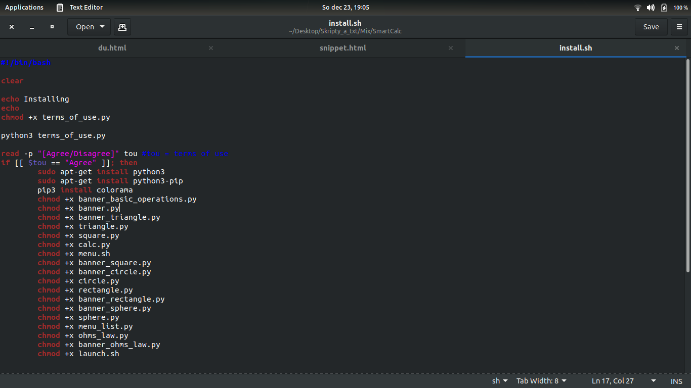
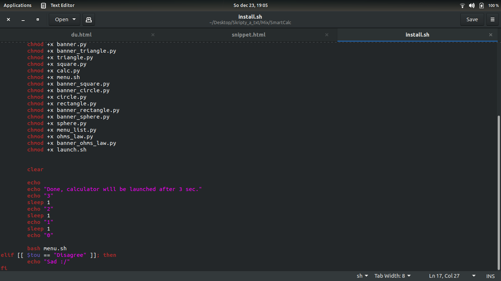
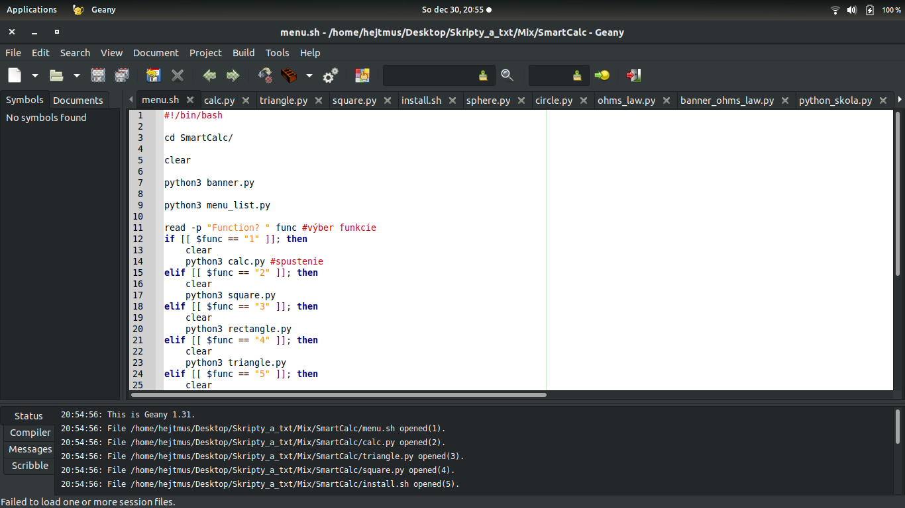
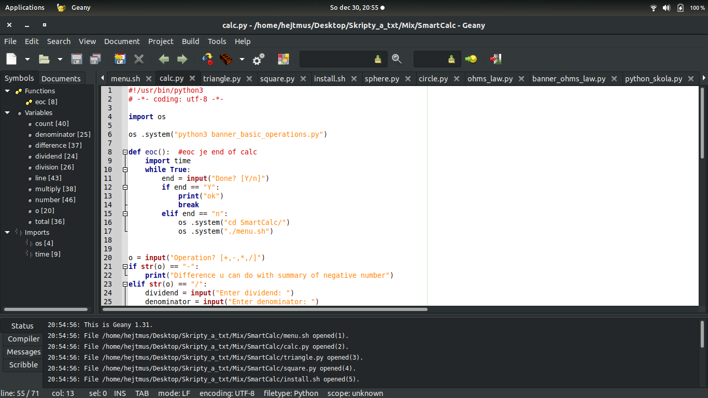
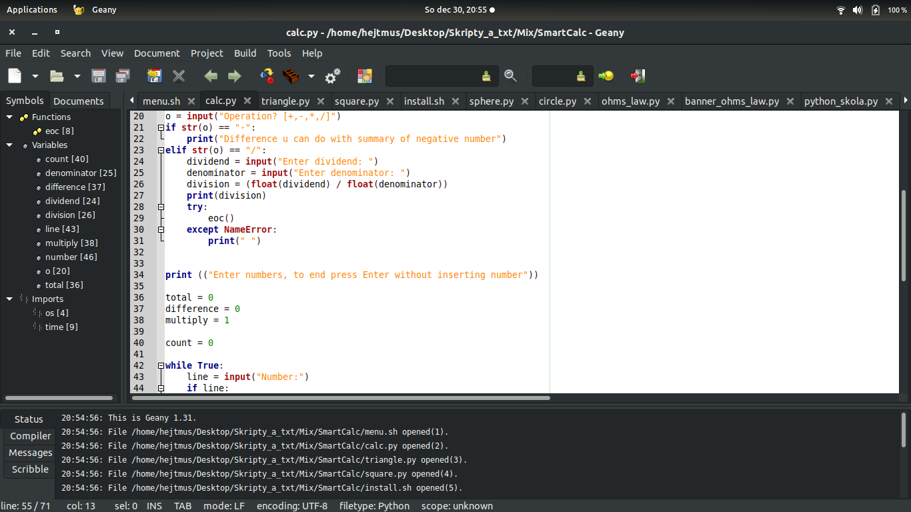
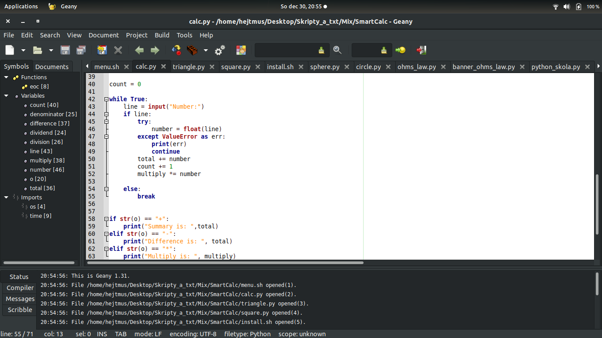
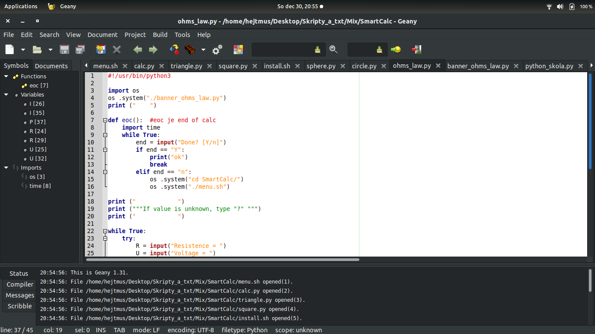
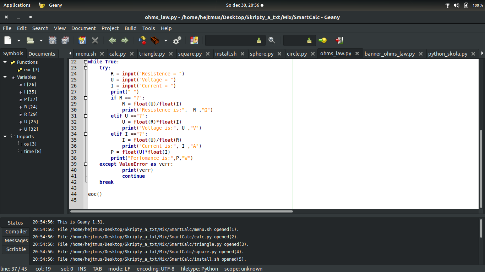

Čo sú Snippety?
Z anglického slova "snippet" - útržok. V tejto sekcii si ukážeme takmer celý kód časti programu a útržky z neho vám vysvetlím. Keď pôjdete kurzorom na obrázok, zväčší sa, ak ste na telefóne podržte obrázok. Vysvetlenia sú písané v programátorskom slangu.
Install.sh
Na začiatok by som predstavil script "Install.sh". Bol to nenahraditeľný skript tohto programu, bez jeho vykonania nebolo možné používať kalkulačku SmartCalc avšak nedávno som ho nahradil inštalačným balíkom .deb (Slúžia na inštalaćiu programov v Debiane - distribúcia Linuxu).
Ako môžete vidieť, dal som ifovník ktorý sa vás pýta či šúhlasíte s podmienkamy používania, ak požívatel súhlasí script nainštaluje potrebné balíky ktoré sú potrebné na správne fungovanie programu a nasledne spusti menu.sh.
A ak nesúhlasíte s podmienkami používania, program vám napíše "Sad :/". Else by tam nemohlo byť lebo keby používatel zadal napríklad "dfjbjk" bralo by to ako "Disagree".
Menu.sh
Ako ďalšie by som predstavil script Menu.sh
Menu.sh slúži ako menu vštkých skriptov, preto sa to tak volá. Keď spustíte SmartCalc pomocou ikony tak sa vykoná práve tento skript, funguje ako srdce programu a spája všetky skripty dokopy. Usúdil som že na túto funkciu bude Bash najlepší. Banner.py vám 'vyprintuje' všetky možnosti. Zvyšok je 'ifovník' pri ktorom je každý elif jeden skript.

Koniec skriptu teda 5 krát echo je zbytočné lebo si to všimnete iba keď zle zadáte možnosť (nie ako else), teda by vás ifovník nehodil do ďalšieho skriptu. Pokiaľ by ste dali správnu možnosť, tých 5 prázdnych riadkov by ste nevydeli lebo by skript spravil ešte pred tým "clear".
Calc.py
Prvý napísaný skript programu SmartCalc
Importoval som "os" aby som mohol vykonávať príkazy konkrétne dostať sa do zložky SmartCalc a znova spustiť. Potom sa vás menu.sh spýta akú operáciu chcete vykonať.
| Operácia | + | - | * | / |
|---|---|---|---|---|
| Spôsob vykonania | += | += | *= | divident/denominator |
| Komentár | - | používateľ vkladá záporné čísla | - | používatel 2 zadá čísla |
Toto je tabulka operácii a ako som to vpísal do skriptu.
Teraz tu máme srdce kalkulačky, táto časť (tento while) spracováva operácie (okrem delenia, to sa nachádza na predošlom obrázku). Po while tu máme ďalší ifovník ktorý určuje čo chcete vyprintovať.

V tejto časi máme koniec ifovníku a zvolanie funkcie "eoc". Funkcia eoc je použitá vo všetkých skriptoch kalkulačky.
Ohms_law.py
Ďalej by som predstavil najnovší script "Ohms_law.py". Je to funkcia kalkulačky ktorá vám na základe Ohmovho zákonu vypočíta neznámu veličinu plus vám vypočíta výkon.
Importoval som "os" aby som mohol vykonávať príkazy, konkrétne dostať sa do zložky SmartCalc a znova spustiť Menu.sh následne vyprintujem banner Ohmovho zákona, ďalej definujem funkciu "eoc" (koniec kalkulačky) ktorú neskôr zvolám na konci skriptu. eoc(): (import time sa v najnovšej verzii nemá žiadny zmysluplný efekt) Kalkulačka sa vás bude pýtať či ste skončili alebo nie, až do vtedy do kedy jej neodpoviete. V tomto bode začína tok programu, napíše vám, že pokiaľ je vám veličina neznáma napíšte "?".
Druhá a tá hlavná časť skriptu spočíva v tom, že sa vás program spýta na hodnoty veličín, ako som spomínal vyššie pre neznámu veličinu uveďte "?". Cyklus while zabespečí to, že jeho obsah sa bude opakovať dovtedy dokedy neuvedieťe hodnoty ktoré spĺňajú podmienky. Ak zadáte neplatné hodnoty vykoná sa výnimka ktorá obsah while zopakuje. Ako vydíte while sa vás spýta na hodnoty a vypočíta na základe ohmovho zákona.